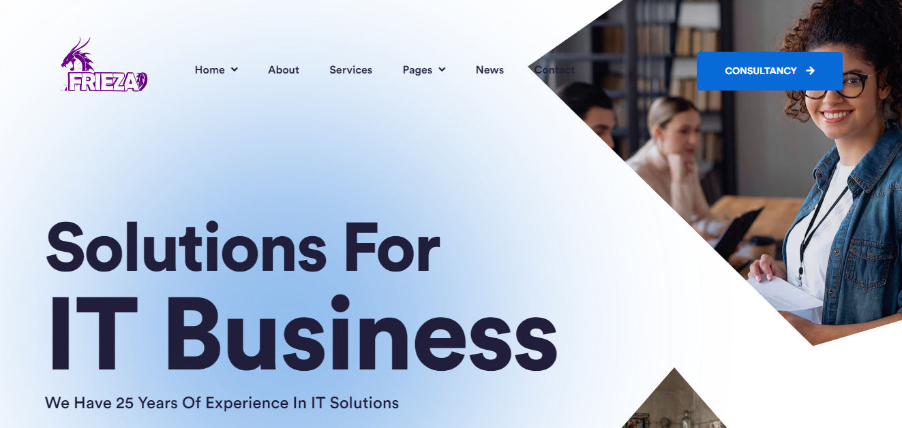
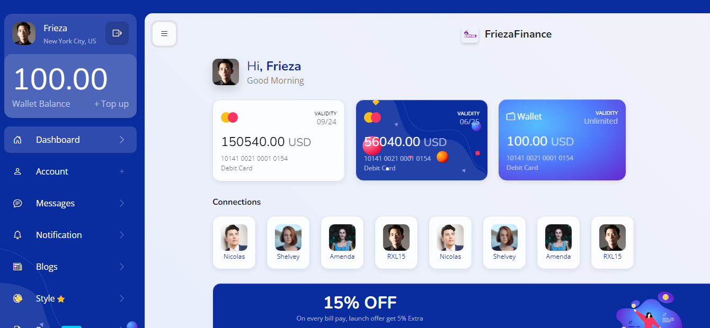
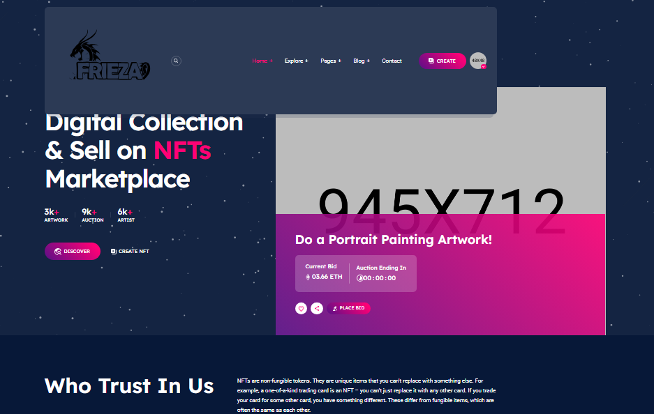
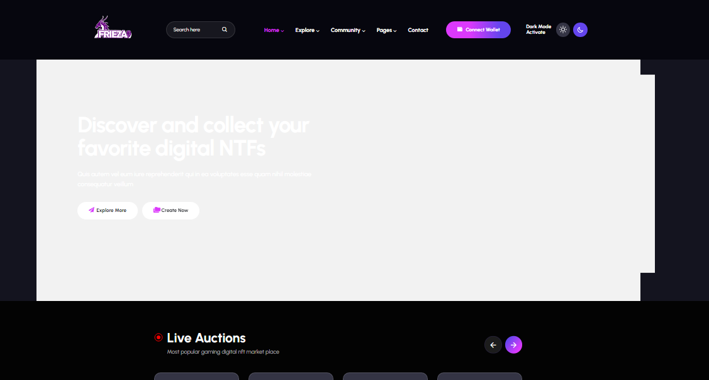
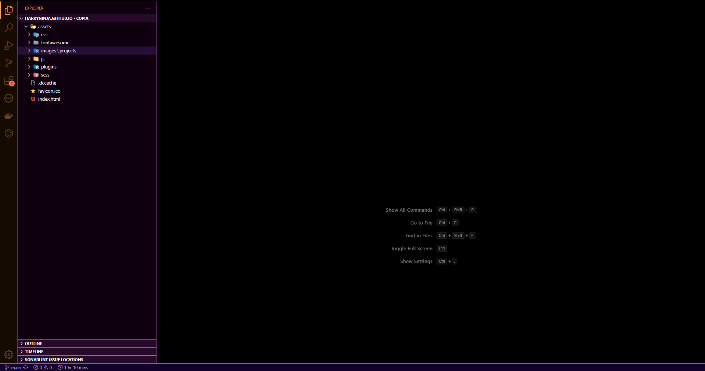
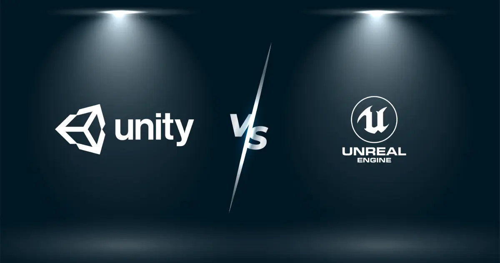

O que eu entrego
Desenvolvimento de interfaces, APIs, integracoes, sistemas cloud e fluxos de deploy com foco em qualidade, manutencao e velocidade de entrega.
Sou Harold Marcel Illert Junior, engenheiro de software com atuacao em plataformas web, APIs, cloud, observabilidade, automacao, web3 e desenvolvimento de jogos. Hoje trabalho com produtos que exigem escalabilidade, manutencao e visao de negocio.

Jaboatao dos Guararapes, Pernambuco
Minha base passa por desenvolvimento web, automacao, infraestrutura, observabilidade e produtos digitais. Tenho facilidade para aprender tecnologias novas e atuar tanto na construcao quanto na sustentacao de sistemas.
Desenvolvimento de interfaces, APIs, integracoes, sistemas cloud e fluxos de deploy com foco em qualidade, manutencao e velocidade de entrega.
Priorizo organizacao, comunicacao simples, aprendizado continuo e visao pragmatica para resolver problemas de negocio sem complicar o produto.
Full-stack, DevSecOps, cloud, QA, web3, mobile e game development. Consigo transitar entre diferentes stacks conforme a necessidade do projeto.
React, Next.js, Angular, Node.js, NestJS, Flask, PHP e C# para produtos web e APIs.
AWS, GCP, Azure, Docker, Kubernetes, Rancher, Jenkins e monitoramento em producao.
Testes com Jest, Mocha, Cypress e pytest, alem de praticas de DevSecOps e observabilidade.
Unity, Blender, Solidity, web3.js, smart contracts e projetos voltados a blockchain.
Organizei as experiencias mais relevantes para mostrar com clareza sua evolucao entre desenvolvimento, plataforma, cloud e produtos digitais.
Atuacao com Python Flask, AWS, MySQL e integracao com LLM proprio, participando da construcao de produto e evolucao tecnica da plataforma.
Projeto focado em backend com Python Flask, front com Jinja HTML, APIs REST, testes com pytest e persistencia em Postgres.
Desenvolvimento com Node.js e React em TypeScript, APIs REST e GraphQL, MongoDB e ambiente local com Rancher para testes.
Monitoramento de infraestrutura com GCP Logging e Dynatrace, pipelines CI/CD com Jenkins, conteinerizacao com Docker e Kubernetes e servicos Node.js.
Desenvolvimento de app mobile e plataforma web com Ionic Angular, Node.js, PHP, Laravel e Firebase.
Atuacoes em ASC Solutions, Genezys, Koper, Paciente 360 e outros projetos com .NET, Angular, NestJS, Solidity, Node.js, Python, MongoDB, PostgreSQL, Azure e AWS.
Selecionei projetos visuais e tecnicos para demonstrar amplitude de stack, qualidade visual e capacidade de execucao.

Template de empresa de tecnologia com foco em landing page moderna e apresentacao comercial.

Board visual de financas com pegada de produto digital, interface clara e organizacao de dados.

Marketplace com visual premium voltado a ecossistema crypto e experiencia moderna de navegacao.

Segunda variacao de marketplace com linguagem visual mais forte e foco em vitrine de produto.
Projeto funcional entre multiplas exchanges com foco em automacao, logica e integracao.

Repositorio com codigos e exercicios de infraestrutura, deploy, conteinerizacao e cloud.
Ampliei a secao com tutoriais conectados a minha vivencia em full-stack, cloud, mobile, observabilidade, DevOps, web3 e games.





Se voce procura alguem com perfil versatil, base tecnica ampla e capacidade de aprender rapido, posso contribuir em times de produto, plataforma ou consultoria.